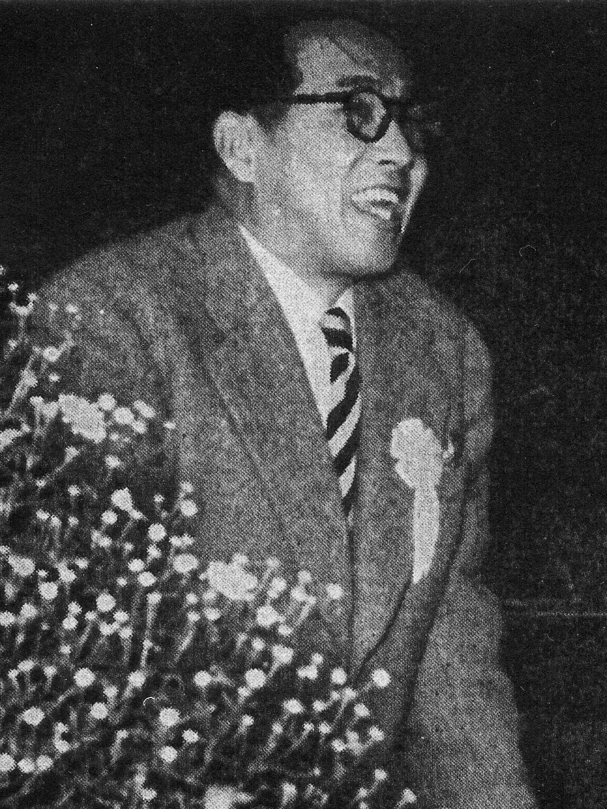
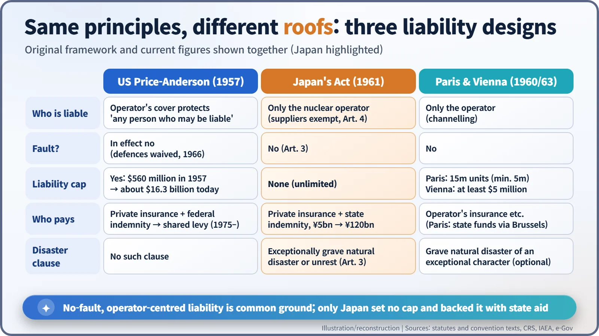
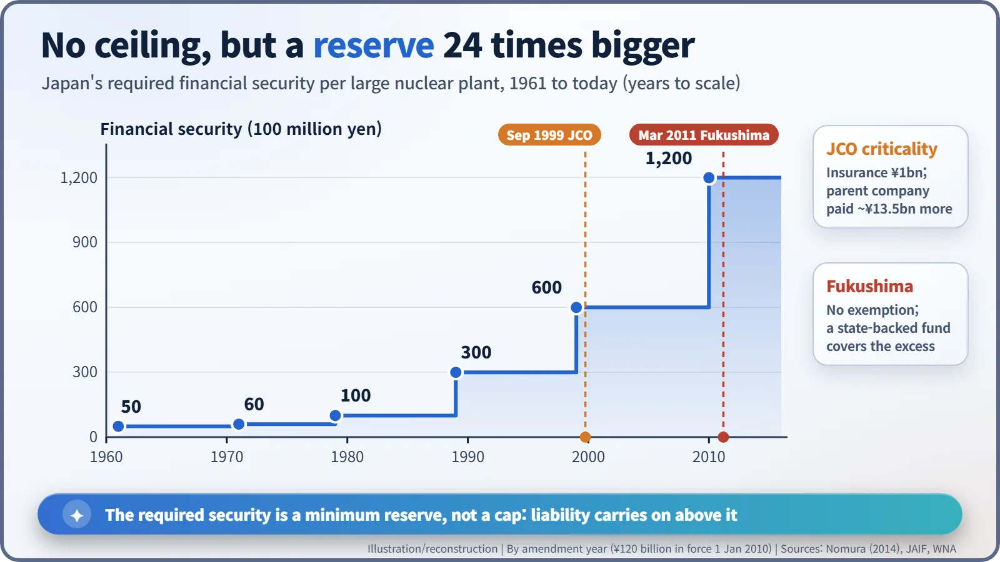

Nuclear History · 242
Liability With No Ceiling — Japan's Act on Compensation for Nuclear Damage (1961)
Japan chose no-fault, channelled and uncapped liability backed by state aid, then raised the required financial security 24-fold from ¥5 billion to ¥120 billion.
In 1961 Japan passed a nuclear compensation law that made operators liable without fault, channelled all claims to them and, unlike the United States or the European conventions, set no ceiling on how much they might owe. Required financial security grew from ¥5 billion to ¥120 billion, and the design met its hardest test after the Fukushima accident in 2011.
A cash deposit instead of insurance
In January 2012, the Tokyo Electric Power Company (TEPCO) handed ¥120 billion to the Tokyo Legal Affairs Bureau. It was not an insurance premium but a cash deposit. After the Fukushima accident, the Japan Atomic Energy Insurance Pool, a consortium of 23 non-life insurers, had declined to renew TEPCO's cover. The law still required the company to hold "financial security" for nuclear damage, so it simply parked the money with the state. The roots of that unusual scene go back half a century, to Japan's Act on Compensation for Nuclear Damage of 1961. [4]
A question that arrived before the reactors
In the mid-1950s Japan was opening its door to nuclear power. The Atomic Energy Basic Act came in 1955, and construction of the country's first commercial plant, Tokai-1, a British-designed gas-cooled reactor, was due to start in March 1961. But if a serious accident happened, who would pay, how much, and from what money? Under ordinary civil law, victims would have to prove the operator was at fault, and foreign manufacturers that had supplied the plant could be dragged into lawsuits too.
So in 1958 Japan's Atomic Energy Commission set up an expert committee on nuclear disaster compensation. It was chaired by Sakae Wagatsuma (1897–1973), a towering figure in Japanese civil law who had been a professor and dean of the law faculty at the University of Tokyo. The committee reported on 12 December 1959. While the bill was being drafted there was reportedly a tug-of-war with the Ministry of Finance over one question above all: how far should the state step in if the damage outgrew what any company could pay? [2] [5]

The act was promulgated on 17 June 1961 as Act No. 147 and took effect on 15 March 1962. A companion law, Act No. 148, set up the government indemnity agreements that back it. [1] [2]
Four pillars
- Liability without fault. If operating a reactor causes nuclear damage, the operator must compensate, whether or not it did anything wrong (Article 3).
- Channelling. Article 4 states that no one other than the liable operator shall be liable. Manufacturers and suppliers drop out of the picture, and victims do not have to work out whom to sue.
- Unlimited liability. The United States' Price-Anderson Act and Europe's Paris Convention put a ceiling on liability per accident. Japan's law has none. Instead, operators must line up a set amount in advance, the "financial security". At first this was ¥5 billion per plant.
- State backing. If the damages exceed the financial security and the government considers it necessary, it "shall provide the nuclear operator with the aid required" to pay (Article 16; our translation). The state does not pay victims directly; it helps the operator keep paying. That was exactly the clause fought over with the finance ministry, and its wording was reportedly still being adjusted at the very end.

One line written for an earthquake country
The most Japanese part of the design lies in its insurance. Private insurers would not cover damage caused by earthquakes, eruptions or tsunamis. So the burden was split in two: ordinary accidents fall on private liability insurance, while earthquakes, tsunamis and damage from normal operation are covered by an indemnity agreement with the government. [3]
Article 3 also carries a single proviso. If the damage is caused by "an abnormally huge natural disaster or social upheaval" (our literal translation; it is often rendered as a grave natural disaster of an exceptional character), the operator is not liable. In that case Article 17 directs the government to take the measures needed to rescue victims and stop the damage spreading. The idea was not new: the Paris and Vienna conventions also allowed an exemption for "a grave natural disaster of an exceptional character". It is often said that, for earthquakes, the threshold means ground acceleration of roughly three times that of the 1923 Great Kanto earthquake, but no such number appears in the statute. [1] [6]
From ¥5 billion to ¥120 billion
Because the government indemnity and state-aid clauses had expiry dates, the act was revised roughly every ten years. The financial security rose to ¥6 billion in 1971, ¥10 billion in 1979, ¥30 billion in 1989 and ¥60 billion in 1999. An amendment in 2009 doubled it to ¥120 billion from January 2010: 24 times the original amount. [2] [3]

The law was first put to real use after the criticality accident at the JCO uranium processing plant in Tokai village on 30 September 1999. According to the World Nuclear Association, the plant's insurance covered ¥1 billion, and the parent company, Sumitomo Metal Mining, paid the remaining ¥13.5 billion or so. [4]
The real test came on 11 March 2011. After the magnitude 9.0 earthquake and tsunami, the Fukushima Daiichi accident followed, and the government took the position that the Article 3 proviso did not apply. TEPCO was liable. Since ¥120 billion was nowhere near enough, a new law in August 2011 created a support body, reorganised in 2014 as the Nuclear Damage Compensation and Decommissioning Facilitation Corporation. It is funded by contributions from power companies and by government bonds that can be cashed when needed. The World Nuclear Association puts the government's funding limit at ¥13.5 trillion and reports that compensation to evacuees and others had passed ¥11 trillion by late 2025. Japan also joined the international Convention on Supplementary Compensation for Nuclear Damage (CSC), which entered into force on 15 April 2015. [4] [6]
The 1961 formula of "no ceiling, plus state aid" put victims first. Yet how the burden is really shared between operators and the state remained vague. In 2016 a special committee of the Atomic Energy Commission said the ¥120 billion should be raised, but the principle of unlimited liability stayed. The line that an earthquake country drew in 1961 is still being redrawn. [4]